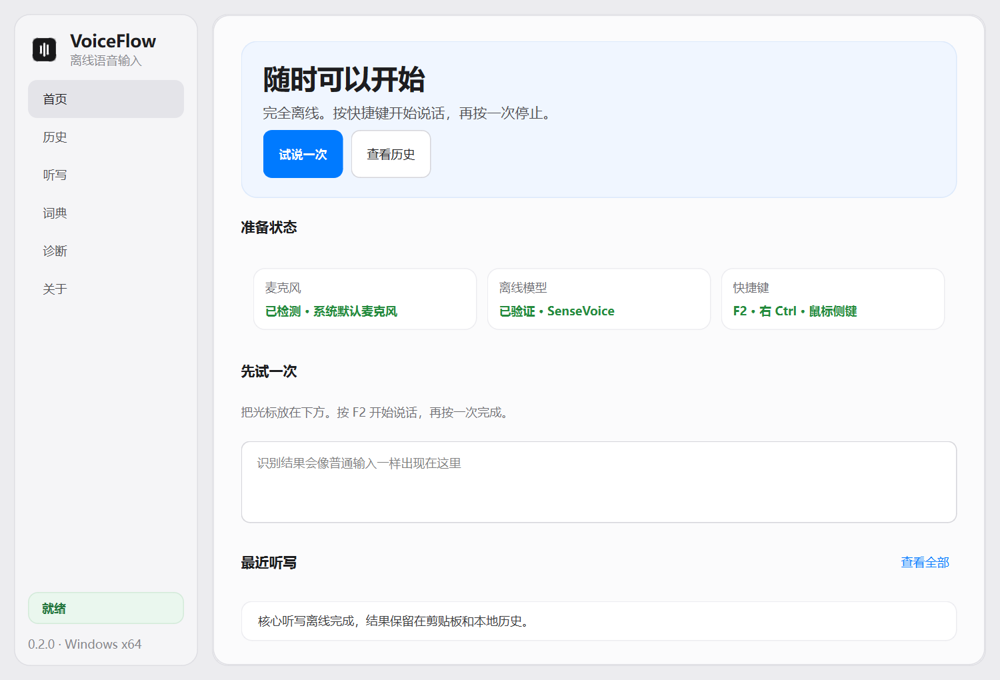

Windows 上的离线语音输入
开口。文字就位。
按一次说话，再按一次完成。无需账户，不上传录音；即使目标窗口没有接住，文字也还在。
Windows 10 / 11 · x64 · v0.2.0

少一步，快很多
你的思路，不必先绕进另一个应用。
VoiceFlow 不是录音转写工作台。它只在你开口时出现，把结果放回原来的工作里。
-
1
按下
按 F2 开始
-
2
说话
在本机完成识别
-
3
出现
文字回到当前光标
离线识别
日常听写不调用云端服务
剪贴板兜底
先保存文字，再发送粘贴
本地历史
每次结果都有恢复路径
先过门禁，再写进介绍
可靠，不靠一句“很快”。
每次发布都要经过同一套性能、生命周期、模型输出和安装态检查。没有通过，就不发布。
数据来自项目发布门禁机器，不代表所有电脑；安装前请查看系统要求与完整测试说明。
一个可靠默认，而不是模型菜单
不把“模型更多”伪装成产品更好。
当前安装包只内置同机中英基准里速度与准确率同时领先的 SenseVoice。Qwen3-ASR、Fun-ASR Nano 与 Whisper 继续留在实验室；只有通过真实语料、延迟、内存和许可门禁，才会进入下载中心。
安静驻留，随时可用
准备状态，一眼就够。
麦克风、离线模型和快捷键是否可用，都在首页清楚呈现。
Windows
Windows 10 / 11 · x64
可下载
macOS
尚未提供
等待原生权限与签名验证
安装包详情
当前 Windows 安装包尚未代码签名，系统可能显示信誉提示。请仅从本页或 GitHub Releases 下载。
VoiceFlow-0.2.0-Windows-x64.exe